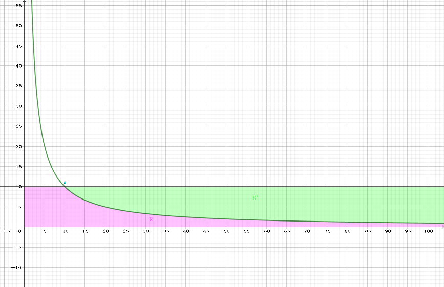

定义 $d(n)$ 为 $n$ 的正因数的个数，比如 $d(2) = 2, d(6) = 4$。
令 $$ S_1(n) = \sum_{i=1}^n d(i) $$
给定 $n$，求 $S_1(n)$。
第一行包含一个正整数 $T$ ($T \leq 10^5$)，表示数据组数。
接下来的 $T$ 行，每行包含一个正整数 $n$ ($n < 2^{63}$)。
对于每个 $n$，输出一行一个整数，表示 $S_1(n)$ 的值。
首先，显然有 $$ S_1(n) = \sum_{i=1}^n \left \lfloor \frac ni \right \rfloor $$
如果使用最暴力的整除分块，那么时间复杂度为 $O \left( \sqrt n \right)$，无法通过此题。因此需要寻找更优秀的算法。
在这之前，我们先把问题转化一下，由于整除分块的细节较为麻烦，因此我们可以利用以下恒等式：
$$ \sum_{i=1}^n \left \lfloor \frac ni \right \rfloor = 2 \sum_{i=1}^{\lfloor \sqrt n \rfloor} \left \lfloor \frac ni \right \rfloor - \left \lfloor \sqrt n \right \rfloor^2 $$
来将问题转化为求 $\sum\limits_{i=1}^{\lfloor \sqrt n \rfloor} \left \lfloor \dfrac ni \right \rfloor$ 的值 (上式的证明较易，这里略去)。
这个值即为函数 $f(x) = \dfrac n x$、直线 $y = \sqrt n$、$x$ 轴和 $y$ 轴所围成的区域 $R$ 中整点 (格点) 的个数 (含边界，$x$ 轴除外)。因此就转化成了函数内部数格点问题。
容易发现，这个函数是一个凸函数，因此区域 $R$ 的补集 $R'$ (确切地说应该是 $R$ 的右侧部分，即 $0 < y \leq \sqrt n; x y > n$ 的部分) 为一个凸集，如果我们用一个凸包近似拟合该函数，然后根据 Pick 定理即可快速计算格点数。
(ps: 下面的内容我也不会，只能膜拜国外大神的 blog 了)
下面介绍一种方法，通过在 Stern-Brocot 树上寻找斜率，借助单调栈来找到这样一个凸包。
记 $B = \left \lfloor \sqrt n \right \rfloor$，我们从点 $P_0 \left( \left \lfloor \dfrac nB \right \rfloor, B+1 \right)$ (下图中的青色点) 开始，一步一步寻找 (能够拟合 $R'$ 的) 凸包上所有的点。
首先 (由于在 Stern-Brocot 树中寻找斜率)，我们在栈中加入两个分数 (为斜率的绝对值) $\dfrac 01$ 和 $\dfrac 11$，代表向量 $(1, 0)$ 和 $(1, 1)$，由于 $f' \left( \sqrt n \right) = -1$，因此这部分所有斜率都在 $-1 \sim 0$ 之间。 此外，这个栈需要满足自顶向上是单调递增的。
接下来，我们取出栈顶向量，将 $P_0$ 持续与这个向量 (关于 $x$ 轴的对称，下略) 相加，直到这个点 $P_k$ 不在区域 $R'$ 中 (即在区域 $R$ 中)。由于这些分数是在 Stern-Brocot 树中产生的，因此一定是既约分数 (即分子与分母互素)。
因此每加一步，我们可以计算出这个横条的面积：设向量为 $(u, v)$，上一个点 ($P_{k-1}$) 的横坐标为 $x$，则面积为 $x v + \dfrac 12 (v + 1) (u - 1)$。
接着我们要对栈进行调整。由于函数的斜率的绝对值单调递减，因此栈中的分数也需要单调递减。
故我们需要把值过大的分数弹出栈外，直到栈顶和它下面的元素与 $P_k$ 相加后，前者在 $R'$ 外，后者在 $R'$ 内。把这两个向量记作 $l$ 和 $r$。
然后就是要在 Stern-Brocot 树上二分了 (确切地说应该是往深处走)。
记 $l = \dfrac {y_l} {x_l}, r = \dfrac {y_r} {x_r}$ ($l > r$)，则 $m = \dfrac {y_m} {x_m} = \dfrac {y_l + y_r} {x_l + x_r}$。令 $M = P_k + m$ (即 $P_k$ 按照向量 $m$ 平移后的点)，如果 $M$ 在 $R'$ 中，则将 $r$ 压入栈后令 $r \gets m$，继续二分；否则，分以下两种情况讨论：
如果 $\left| f' \left( x_k + x_m \right) \right| \leq r$ (其中 $x_k$ 为 $P_k$ 的横坐标)——由 $f'(x) = - \dfrac n {x^2}$ 可得该条件等价于 $n x_r \leq (x_k + x_m)^2 y_r$ ——则容易得到如果再迭代下去的话，所有的 $P_k + m$ 都不会落在 $R'$ 内，也就能说已经二分完毕了，因此只需保留当前的栈重新回到步骤 2 进入下一轮迭代。
如果 $\left| f' \left( x_k + x_m \right) \right| > r$，则接下来的向量还有可能落入 $R'$ 中，因此令 $l \gets m$ 后继续二分。
最后注意一些边界问题，即曲线上的点属于 $R$ 还是属于 $R'$。这由具体题目决定，由于本题中曲线上的点需要被计入答案，因此这些点属于 $R$。即 $R$ 中的点满足 $x y \leq n$，$R'$ 中的点满足 $x y > n$ (当然如果不需要被计入答案的话则曲线上的点就属于 $R'$ 了)。
(scx: 那时间复杂度是多少呢？)
很抱歉这部分我并不会证明 (听说作者也不太会证的样子？)。
不过好像有论文？如果你们有耐心可以读一读……
根据那篇论文，目前已有的结论是不同斜率的数量不超过 $O \left( n^{1/3} \right)$，因此算法的时间复杂度是 $O \left( n^{1/3} \log n \right)$ 的。
注意到后期函数的斜率非常小，都是 $\dfrac 1k$ 的形式，因此算法在这部分会退化为 $O(y)$，因此可以在 $y \leq \sqrt[3]n$ 的部分中直接暴力计算即可，总时间复杂度 $O \left( n^{1/3} \log n \right)$。
#include <bits/stdc++.h>
#define N 1000005
#define push(x) (stack[++top] = (x))
typedef long long ll;
typedef __int128 lll;
struct pr {
ll x, y;
pr (ll x0 = 0, ll y0 = 0) : x(x0), y(y0) {}
inline pr operator + (const pr &B) const {return pr(x + B.x, y + B.y);}
};
ll n;
int top = 0;
pr stack[N];
inline void putint(lll x) {
static char buf[36];
if (!x) {putchar(48); return;} int i = 0;
for (; x; buf[++i] = x % 10 | 48, x /= 10);
for (; i; --i) putchar(buf[i]);
}
inline bool inner(ll x, ll y) {return n < x * y;}
inline bool steep(ll x, pr v) {return (lll)n * v.x <= (lll)x * x * v.y;}
lll S1() {
int i, crn = cbrt(n);
ll srn = sqrt(n), x = n / srn, y = srn + 1;
lll ret = 0;
pr L, R, M;
push(pr(1, 0)); push(pr(1, 1));
for (; ; ) {
for (L = stack[top--]; inner(x + L.x, y - L.y); x += L.x, y -= L.y)
ret += x * L.y + (L.y + 1) * (L.x - 1) / 2;
if (y <= crn) break;
for (R = stack[top]; !inner(x + R.x, y - R.y); R = stack[--top]) L = R;
for (; M = L + R, 1; )
if (inner(x + M.x, y - M.y)) push(R = M);
else {
if (steep(x + M.x, R)) break;
L = M;
}
}
for (i = 1; i < y; ++i) ret += n / i;
return ret * 2 - srn * srn;
}
int main() {
int T;
for (scanf("%d", &T); T; --T) {scanf("%lld", &n); putint(S1()); putchar(10);}
return 0;
}
坑1：答案需要使用 __int128 存储。
坑2：注意各种边界条件，还有点 $(x, y)$ 和向量 $(x_m, y_m)$ 等不要搞混。